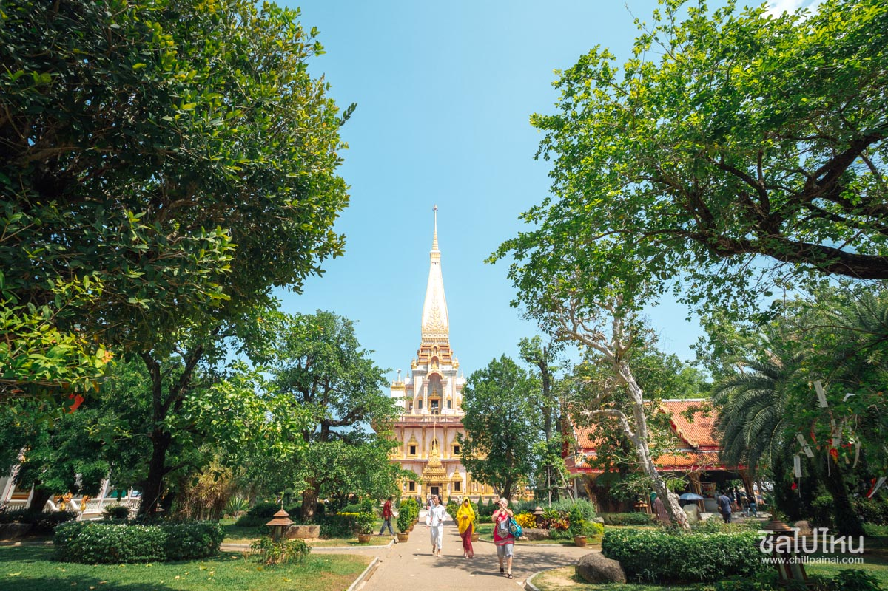
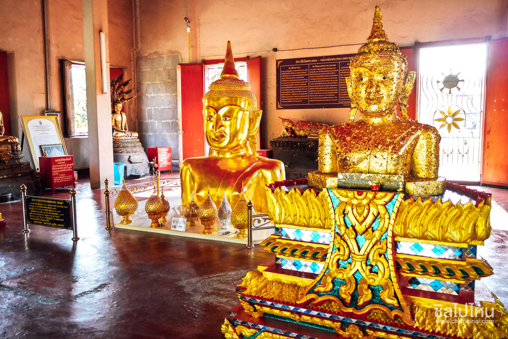

ไหว้พระ-ประจำจังหวัด

วัดฉลอง เริ่มต้นที่แรกกับศูนย์รวมใจคนภูเก็ตนั่นก็คือวัดฉลองหรือชื่อที่เรียกเป็นทางการก็คือวัดไชยธารามเป็นวัดคู่บ้านคู่เมืองที่มีชื่อเสียงของภูเก็ตถ้าใครมาภูเก็ตจะต้องมาแวะนมัสการหลวงพ่อแช่มแห่งวัดฉลองเพื่อเป็นสิริมงคล แต่ตัวเองเรื่องราวความศักดิ์สิทธิ์กิตติศัพท์ในการรักษาโรคบุญญาบารมีและเมตตาธรรมที่สูงส่งของหลวงพ่อทำให้มีผู้เลื่อมใสศรัทธาเป็นอันมากเล่ากันว่าในขณะที่ท่านมีชีวิตอยู่นั้นถึงกับมีผู้ที่รอปิดทองตามแขนและขาของท่านจนแลดูเหลืองอร่ามไปทั่วราวกับปิดทองพระพุทธรูปและแม้ว่าหลวงพ่อแช่มจะมรณภาพเป็นเวลานับหนึ่งร้อยปีมาแล้วก็ตามชื่อเสียงเกียรติคุณและบารมีของท่านก็อยู่ในความทรงจำของผู้คนสืบมาอีกทั้งที่วัดฉลองแห่งนี้ยังเป็นที่ตั้งของพระมหาธาตุเจดีย์พระจอมไทยบารมีประกาศเป็นที่ประดิษฐสถานของพระบรมสารีริกธาตุของพระพุทธเจ้าที่นำมาจากศรีลังกาวัดฉลองแห่งนี้เป็นสถานที่ท่องเที่ยวในภูเก็ตอีกแห่งที่ใคร ๆ ที่มาเที่ยวภูเก็ตจะต้องมาวัดแห่งนี้

วัดพระทอง(วัดพระผุด)เป็นอีกวัดหนึ่งอยู่ อ.ถลางซึ่งอยู่คู่เมืองภูเก็ตมานานความพิเศษของวัดแห่งนี้คือพระพุทธรูปที่โผล่ขึ้นมาจากพื้นดินเพียงครึ่งองค์ภายในวัดยังมีพิพิธภัณฑ์ท้องถิ่นที่อยู่ใกล้ ๆ ซึ่งเป็นที่เก็บวัตถุและข้าวของเครื่องใช้ของชาวภูเก็ตสมัยก่อนอีกด้วยตำนานพระผุดนี้มีประวัติว่าเมื่อคราวศึกพระเจ้าปะดุงยกพลมาตีเมืองถลาง พ.ศ. 2328 ทหารพม่าพยายามขุดพระผุดเพื่อนำกลับไปพม่า แต่ขุดลงไปคราวใดก็มีฝูงแตนไล่ต่อยจนต้องละความพยายามต่อมาชาวบ้านได้นำทองหุ้มพระพุทธรูปที่ผุดจากพื้นดินเพียงครึ่งองค์ดังปรากฏอยู่จนถึงปัจจุบัน